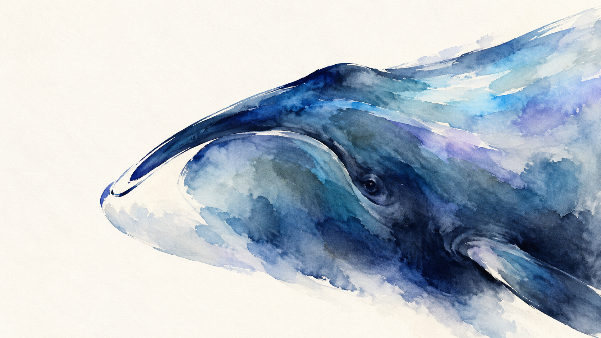

Research area
Longevity
Longevity medicine aims to extend healthspan—the years lived in good health—by preventing or delaying age-related chronic disease. Because aging is a major risk factor for many chronic conditions, research investigates the biological mechanisms of aging and evaluates whether interventions targeting these pathways can preserve function, reduce disease risk, and improve long-term health outcomes.

Research Reviews
Research reviews will be published here as they become available.